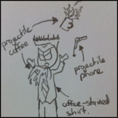
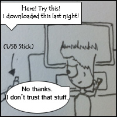
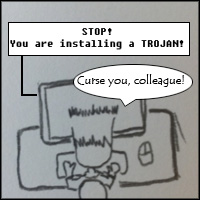

What are Keylogger trojans and how can I avoid them?Keylogger trojans record everything you type and send it to a remote location (Landesman, n.d.). With this information, a hacker can compromise any accounts that you access using the internet. |

|
PreventionHow can this be avoided? The easiest way to avoid trojans is to avoid software from suspcious, dubious and illegitmate sources (Lexus, 2011).However, sometimes you might trust your source or are unfamiliar with what a suspicious source might look like... |

|
Anti-Virus and FirewallsAnti-virus software can protect you from installing malicious software, including trojans (Lexus, 2011). However, do not become complacement when you have anti-virus installed. New malicious software is being released constantly and can bypass your anti-virus (Kotadia, 2006). Alternatively, there are software firewalls. These act to monitor internet traffic, to and from your computer (Firewall, 2009). A properly configured firewall can act to protect you from trojans by restricting traffic to programs you specifically allow (Lexus, 2011). However prevention is still the best method to protect yourself from trojans (Lexus, 2011). |

|